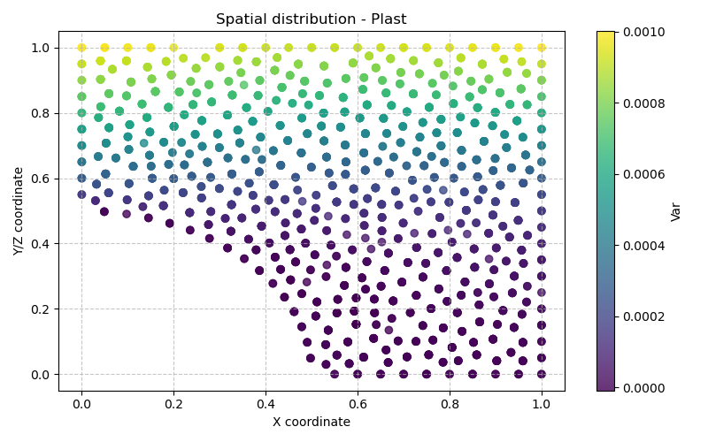

Modèle Plast — Élasto-plasticité avec critère de Drucker-Prager (ou Cam-Clay)
Fichiers sources :
src/Models/ModelFiles/Plast.cpp·base/Plast/Plast·base/Plast/Plast0·base/Plast/Plast1Auteurs du modèle : P. Dangla (Université Gustave Eiffel)
Table des matières
- Contexte et objectif
- Hypothèses
- Variables et notation
- Modèle mathématique
- 4.1 Équation d'équilibre mécanique
- 4.2 Comportement élastique (Hooke isotrope)
- 4.3 Critère de plasticité de Drucker-Prager
- 4.4 Règle d'écoulement plastique (non-associée)
- 4.5 Intégration par retour radial (Return Mapping)
- Homogénéisation numérique et gradient macro
- Cas tests
- 6.1 Plast — Cellule composite 2D périodique (cisaillement)
- 6.2 Plast0 — Cellule composite 1D périodique (traction)
- 6.3 Plast1 — Couche cylindrique en pression (axisymétrie)
- Paramétrage matériel du modèle
- Description pas-à-pas des fichiers d'entrée
- 8.1 Fichier
Plast— cellule composite 2D, cisaillement périodique - 8.2 Fichier
Plast0— cellule composite 1D, traction périodique - 8.3 Fichier
Plast1— couche cylindrique axisymétrique sous pression interne - Implémentation numérique (
Plast.cpp) - Références bibliographiques
1. Contexte et objectif
Le modèle Plast résout les équations d'équilibre mécanique quasi-statique dans un matériau solide présentant un comportement élasto-plastique. Il repose sur la décomposition additive des déformations en une partie élastique réversible et une partie plastique irréversible, couplée à un critère de plastification de Drucker-Prager (ou Cam-Clay) avec écrouissage possible.
Ce modèle est particulièrement adapté à trois grandes familles de problèmes :
- Homogénéisation périodique : calcul de la réponse macroscopique effective d'un matériau hétérogène (composite, géomatériau avec inclusions) soumis à un chargement macroscopique prescrit via un gradient de déplacement moyen.
- Plasticité locale : simulations de géomatériaux (roches, ciments, argiles) présentant de la fissuration ou de l'écoulement plastique sous contrainte.
- Structures axisymétriques sous pression : exemple d'une couronne cylindrique en pression interne/externe.
graph TD
A["Gradient macroscopique imposé<br>E_ij (ou chargement aux bords)"] --> B("Déformation totale<br>ε = ε_e + ε_p")
B --> C["Prédicteur élastique<br>σ_trial = C : ε_e_trial"]
C --> D{"Critère f(σ_trial) > 0 ?"}
D -- Non --> E["Comportement élastique<br>σ = σ_trial"]
D -- Oui --> F["Return Mapping<br>(Drucker-Prager ou Cam-Clay)"]
F --> G["σ corrigé + déformations plastiques Δε_p"]
G --> H["Résidu mécanique<br>∫ σ : δε dΩ = ∫ f·δu dΩ"]
E --> H
2. Hypothèses
- Petites déformations : la décomposition additive \(\boldsymbol{\varepsilon} = \boldsymbol{\varepsilon}^e + \boldsymbol{\varepsilon}^p\) est valide dans le cadre des petits déplacements.
- Élasticité isotrope linéaire : le comportement élastique est entièrement décrit par le module d'Young \(E\) et le coefficient de Poisson \(\nu\).
- Plasticité parfaite ou avec écrouissage isotrope : le critère de Drucker-Prager peut être associé à un écrouissage via la déformation plastique cumulée en cisaillement \(\gamma_p\).
- Quasi-statique : les termes inertiels sont négligés ; l'équilibre est résolu à chaque instant.
- Matériaux hétérogènes : la cellule peut comporter plusieurs matériaux (modèle
Plastpour la matrice, modèleElastpour les inclusions rigides).
3. Variables et notation
Inconnues primaires
| Symbole | Signification | Interne BIL |
|---|---|---|
| \(\mathbf{u}\) | Vecteur déplacement | u_1, u_2, u_3 |
Variables internes (points de Gauss)
| Symbole | Signification |
|---|---|
| \(\boldsymbol{\varepsilon}\) | Tenseur des déformations totales |
| \(\boldsymbol{\sigma}\) | Tenseur des contraintes de Cauchy |
| \(\boldsymbol{\varepsilon}^p\) | Tenseur des déformations plastiques cumulées |
| \(\gamma_p\) | Déformation plastique en cisaillement cumulée (variable d'écrouissage) |
| \(f\) | Valeur du critère de plasticité |
| \(\Delta\lambda\) | Multiplicateur plastique |
Invariants de contrainte
| Symbole | Définition |
|---|---|
| \(p\) | Pression moyenne : \(p = \frac{1}{3}\text{Tr}(\boldsymbol{\sigma})\) |
| \(q\) | Contrainte déviatorique : \(q = \sqrt{3 J_2}\) avec \(J_2 = \frac{1}{2} s_{ij} s_{ij}\) |
| \(\mathbf{s}\) | Partie déviatorique : \(\mathbf{s} = \boldsymbol{\sigma} - p \mathbf{I}\) |
4. Modèle mathématique
4.1 Équation d'équilibre mécanique
En quasi-statique et en l'absence de gravité (\(\rho_s = 0\) dans les cas tests) :
La forme variationnelle faible est :
où \(\mathbf{t}\) est le vecteur des forces surfaciques imposées et \(\delta\mathbf{u}\) un champ de déplacement virtuel admissible.
4.2 Comportement élastique (Hooke isotrope)
La loi élastique isotrope relie les contraintes aux déformations élastiques via les coefficients de Lamé \(\lambda\) et \(\mu\) :
avec :
Le module de compressibilité (bulk modulus) et le module de cisaillement sont :
4.3 Critère de plasticité de Drucker-Prager
Le critère de Drucker-Prager est une version lissée (conique) du critère de Mohr-Coulomb dans l'espace des invariants \((p, q)\) :
avec les paramètres dépendant de l'angle de frottement \(\phi\) :
où \(c\) est la cohésion du matériau (en Pa) et \(C(\gamma_p) = C_0 \cdot \text{fac}(\gamma_p)\) est la cohésion modifiée par l'écrouissage.
Lien avec Mohr-Coulomb : Le critère de Drucker-Prager correspond à l'inscription externe du cône de Mohr-Coulomb dans l'espace des contraintes principales. Pour \(\phi = 25°\) et \(c = 1.5\) MPa, on obtient \(F \approx 0.755\) et \(C_0 \approx 1.94\) MPa.
4.4 Règle d'écoulement plastique (non-associée)
Les incréments de déformation plastique suivent la règle d'écoulement non-associée :
où la fonction potentielle \(g\) est définie avec l'angle de dilatance \(\psi\) (distinct de l'angle de frottement \(\phi\)) :
Le gradient de la fonction de charge (direction normale) est :
Le gradient du potentiel (direction d'écoulement) est :
Le multiplicateur plastique \(\dot{\lambda} \geq 0\) vérifie les conditions de Kuhn-Tucker :
4.5 Intégration par retour radial (Return Mapping)
L'algorithme de return mapping résout de façon incrémentale et implicite le problème de plasticité à chaque point de Gauss.
Étape 1 — Prédicteur élastique (trial state) : $\(\boldsymbol{\sigma}^\text{trial} = \boldsymbol{\sigma}_n + \mathbb{C} : \Delta\boldsymbol{\varepsilon}\)$
Étape 2 — Test du critère : $\(f^\text{trial} = q^\text{trial} + F \cdot p^\text{trial} - C(\gamma_p^n)\)$
- Si \(f^\text{trial} \leq 0\) : comportement élastique, \(\boldsymbol{\sigma} = \boldsymbol{\sigma}^\text{trial}\)
- Si \(f^\text{trial} > 0\) : retour plastique nécessaire
Étape 3 — Correction plastique (régime lisse) :
On cherche \(\Delta\lambda > 0\) tel que \(f(\boldsymbol{\sigma}^{n+1}, \gamma_p^{n+1}) = 0\). La correction s'écrit : $\(\boldsymbol{\sigma}^{n+1} = \boldsymbol{\sigma}^\text{trial} - \Delta\lambda \, \mathbb{C} : \frac{\partial g}{\partial \boldsymbol{\sigma}}\)$
La pression est corrigée par la partie volumique : $\(p^{n+1} = p^\text{trial} - K \cdot D \cdot \Delta\lambda\)$
La contrainte déviatorique est réduite par la partie déviatorique : $\(q^{n+1} = \frac{q^\text{trial}}{1 + 3G\Delta\lambda/q^\text{trial}}\)$
La variable d'écrouissage est mise à jour : $\(\gamma_p^{n+1} = \gamma_p^n + \sqrt{3/2} \cdot \Delta\lambda\)$
Matrice tangente cohérente : Lors de l'écoulement plastique (\(q > 0\) et \(\Delta\lambda > 0\)), le module de cisaillement effectif est réduit :
5. Homogénéisation numérique et gradient macro
Le modèle Plast intègre un mécanisme d'homogénéisation périodique permettant d'imposer un gradient de déplacement macroscopique \(\mathbf{E}\) sur une cellule élémentaire représentative (RVE). Le déplacement local se décompose en :
où \(\tilde{\mathbf{u}}\) est la fluctuation périodique. La déformation locale est alors :
Paramètres correspondants dans le fichier d'entrée :
| Paramètre | Signification |
|---|---|
macro-gradient_ij |
Composante \(E_{ij}\) du gradient macroscopique |
macro-fctindex_ij |
Index de la fonction temporelle modulant \(E_{ij}(t)\) |
Le gradient macroscopique est ainsi \(E_{ij}(t) = \texttt{macro-gradient\_ij} \times f_{\texttt{macro-fctindex\_ij}}(t)\).
Les conditions de périodicité (section Periodicities) imposent que les fluctuations \(\tilde{\mathbf{u}}\) soient identiques sur les bords opposés de la cellule, avec le vecteur de période correspondant.
6. Cas tests
6.1 Plast — Cellule composite 2D périodique (cisaillement)
Géométrie : Cellule carrée \(2 \times 2\) (unités adimensionnelles) en plan (2 plan), contenant 4 inclusions circulaires de rayon \(R = 0.5\) aux quatre coins, assemblées par rotations successives de \(90°\). Le maillage est défini dans composite1.msh (généré depuis composite1.geo et inclusion.geo).
Physique : Cisaillement macroscopique pur imposé par les composantes hors-diagonale du gradient : $\(E_{12} = E_{21} = 10^{-3} \times f(t)\)$
La fonction \(f(t)\) est linéaire de \(0\) à \(t=5\). Le chargement est donc un cisaillement croissant jusqu'à \(\gamma = 5 \times 10^{-3}\).
- Matrice (Surface physique 1) : modèle
Plast(Drucker-Prager), \(E = 2.713\) GPa, \(\nu = 0.339\), \(c = 1.5\) MPa, \(\phi = \psi = 25°\) - Inclusions (Surface physique 2) : modèle
Elast(élasticité linéaire pure), \(E = 2.713 \times 10^{10}\) GPa (quasi-rigide), \(\nu = 0.49\)
Résultats attendus : Sous cisaillement croissant, la matrice se plastifie d'abord aux points de concentration de contrainte (angles des inclusions), puis progressivement. Les inclusions quasi-rigides restent élastiques et redistribuent les contraintes. On observe la formation de bandes de cisaillement plastique.
6.2 Plast0 — Cellule composite 1D périodique (traction)
Géométrie : Cellule 1D (1 plan) définie par 5 nœuds réguliers sur \([0, 1]\) avec un maillage à 10 éléments, contenant une couche souple (matrice) et une couche raide (inclusion). La périodicité relie les bords gauche (Région 1) et droit (Région 4) selon la direction \(x_1\).
Physique : Traction macroscopique axiale imposée : $\(E_{11} = 10^{-3} \times f(t)\)$
Matériaux : Identiques au cas Plast mais en 1D, avec seulement la composante macro-gradient_11 active.
Résultats attendus : Plastification progressive de la matrice sous traction uniaxiale. La loi contrainte-déformation macroscopique effective montre un coude de plastification suivi d'un plateau (plasticité parfaite sans écrouissage dans ce cas).
6.3 Plast1 — Couche cylindrique axisymétrique sous pression interne
Géométrie : Cylindre creux axisymétrique (1 axis), rayon interne \(r_i = 0.1\) m, rayon externe \(r_e = 0.2\) m. Discrétisation radiale avec 10 éléments.
Physique : Contraintes initiales isotropes \(\sigma_0 = -1\) MPa (confinement). Chargement par une pression interne \(p(t)\) appliquée en \(r = r_i\) (Région 1) et une pression externe en \(r = r_e\) (Région 3), modulées par la fonction \(f(t)\) (linéaire de \(-1\) à \(t=0\) puis jusqu'à \(5\) en \(t=10\)). La base est libre selon \(r\).
Matériau : Modèle Plast (Drucker-Prager), \(E = 10\) GPa, \(\nu = 0.26\), \(c = 1\) MPa, \(\phi = \psi = 25°\).
Résultats attendus : Solution analytique connue pour la plasticité d'un cylindre épais (Lamé + Drucker-Prager). Le front de plastification se propage depuis le rayon interne vers l'extérieur à mesure que la pression interne augmente. On peut comparer le profil radial des contraintes \(\sigma_r(r)\) et \(\sigma_\theta(r)\) à la solution analytique.

7. Paramétrage matériel du modèle
Paramètres communs
| Paramètre | Rôle physique |
|---|---|
young |
Module d'Young \(E\) (Pa) — rigidité du squelette |
poisson |
Coefficient de Poisson \(\nu\) — compressibilité latérale |
rho_s |
Densité massique sèche (kg/m³) — poids propre |
gravity |
Accélération gravitationnelle (m/s²) |
sig0_ij |
Contrainte initiale in situ \(\sigma_0^{ij}\) (Pa) |
Paramètres spécifiques Drucker-Prager (modèle 1)
| Paramètre | Rôle physique | Valeur typique |
|---|---|---|
cohesion |
Cohésion \(c\) (Pa) | 1.5 MPa |
friction |
Angle de frottement \(\phi\) (degrés) | 25° |
dilatancy |
Angle de dilatance \(\psi\) (degrés) | 25° (associé) |
Paramètres Cam-Clay (modèle 2, alternatif)
| Paramètre | Signification |
|---|---|
initial_pre-consolidation_pressure |
Pression de préconsolidation initiale \(p_{c0}\) |
slope_of_swelling_line |
Pente de la ligne de gonflement \(\kappa\) |
slope_of_virgin_consolidation_line |
Pente de la ligne de consolidation vierge \(\lambda\) |
slope_of_critical_state_line |
Pente de la ligne d'état critique \(M\) |
initial_void_ratio |
Indice des vides initial \(e_0\) |
Paramètres d'homogénéisation périodique
| Paramètre | Signification |
|---|---|
macro-gradient_ij |
Amplitude du gradient macroscopique \(E_{ij}\) |
macro-fctindex_ij |
Index de la fonction temporelle (définie dans Functions) |
8. Description pas-à-pas des fichiers d'entrée
8.1 Fichier Plast — cellule composite 2D, cisaillement périodique
Dimension : Problème 2D en contraintes planes (plan). BIL résout les équations vectorielles en \(x_1\) et \(x_2\).
Maillage externe : Fichier GMSH généré depuis
composite1.geo (qui inclut inclusion.geo). La géométrie comprend :
- Un carré \([0,2] \times [0,2]\) découpé en 4 quadrants
- Dans chaque quadrant, un quart de disque de rayon \(R=0.5\) centré au coin correspondant
- Surface physique 1 = matrice (zones extérieures aux inclusions)
- Surface physique 2 = inclusions (zones circulaires)
- Les lignes physiques (régions 13, 14, 104, 105, 114, 115, 124, 125) correspondent aux bords de la cellule
Periodicities
4
MasterRegion = 105 SlaveRegion = 13 PeriodVector = 2 0 0
MasterRegion = 114 SlaveRegion = 125 PeriodVector = 2 0 0
MasterRegion = 115 SlaveRegion = 104 PeriodVector = 0 2 0
MasterRegion = 124 SlaveRegion = 14 PeriodVector = 0 2 0
Material #1 # matrix
Model = Plast
young = 2713e6 # E = 2.713 GPa
poisson = 0.339 # ν = 0.339
cohesion = 1.5e+06 # c = 1.5 MPa
friction = 25 # φ = 25°
dilatancy = 25 # ψ = 25° (associé)
macro-gradient_12 = 1.e-3
macro-gradient_21 = 1.e-3
macro-fctindex_12 = 1
macro-fctindex_21 = 1
cohesion, friction, dilatancy déclenche automatiquement la sélection du modèle plastique 1 (SetPlasticModel(1) dans pm()). Le gradient macroscopique de cisaillement est imposé : \(E_{12}(t) = E_{21}(t) = 10^{-3} \times f_1(t)\), où \(f_1\) est la fonction 1 définie dans Functions.
Material #2 # inclusion
Model = Elast
young = 2713e16 # E = 2.713e19 Pa (quasi-rigide)
poisson = 0.49
macro-gradient_12 = 1.e-3
macro-gradient_21 = 1.e-3
macro-fctindex_12 = 1
macro-fctindex_21 = 1
Elast (élasticité pure, sans plasticité). Le même gradient macro est prescrit pour assurer la compatibilité du chargement.
Fonction de chargement : Une seule fonction (index 1), linéaire par morceaux avec 2 points : \(f(0) = 0\), \(f(5) = 5\). Le gradient macroscopique vaut donc \(E_{12}(t) = 10^{-3} \times t\) pour \(0 \leq t \leq 5\).
Boundary Conditions
2
Region = 1 Unknown = u_1 Field = 0 Function = 0
Region = 1 Unknown = u_2 Field = 0 Function = 0
Instants de sortie : Résultats sauvegardés à \(t = 0, 1, 2, 3, 4, 5\) (correspondant aux fichiers
.t0 à .t5).
Contrôle adaptatif du pas de temps : L'incrément de temps \(\Delta t\) est ajusté pour que les variations relatives des inconnues restent autour de \(10^{-4}\) par pas.
Solveur non-linéaire : Newton-Raphson avec au maximum 10 itérations par pas de temps, et une tolérance sur le résidu normalisé de \(10^{-4}\).
8.2 Fichier Plast0 — cellule composite 1D, traction périodique
Dimension : Problème 1D en contraintes planes. Seul le déplacement \(u_1\) est résolu.
Maillage interne BIL (format simplifié) : 5 nœuds aux positions \(x = 0, 0, 0.5, 1, 1\) (les doublons indiquent des frontières de zones). Taille de maille cible : \(h = 0.05\). La ligne
1 10 10 1 définit les régions physiques des segments, 2 2 1 1 les types de matériaux. La cellule est donc composée de deux segments : une couche centrale (matrice, matériau 1, \(x \in [0, 0.5]\)) et une couche externe (inclusion, matériau 2, \(x \in [0.5, 1]\)).
Périodicité 1D : Le bord gauche (Région 1, \(x=0\)) est lié au bord droit (Région 4, \(x=1\)) avec la période \(T_1 = 1\).
Traction macroscopique : Seule la composante \(E_{11}\) est active, imposant une déformation de traction/compression axiale.
Blocage du mode rigide : Le déplacement en \(x=0\) est nul pour lever l'indétermination de la translation.
8.3 Fichier Plast1 — couche cylindrique axisymétrique sous pression interne
Axisymétrie : Problème 1D avec symétrie de révolution. BIL calcule automatiquement les termes de courbure dans l'équation d'équilibre.
Géométrie : 4 nœuds à \(r = 0.1, 0.1, 0.2, 0.2\) m (rayons interne et externe de la couronne). Maillage à 10 éléments de taille \(10^{-2}\) m. Un seul matériau (matériau 1) sur l'unique segment.
État initial : Contraintes initiales isotropes \(\sigma_0 = -1\) MPa simulant un confinement (pression lithogène ou hydrostatique).
Champ initial de pression : Champ scalaire uniforme de valeur \(-1\) MPa utilisé pour initialiser les conditions (ici utilisé comme valeur de référence du chargement).
Initialisation : Le déplacement en \(u_1\) dans la Région 2 (bord interne, \(r = r_i\)) est initialisé à zéro (Field 0 = valeur nulle).
Fonction de chargement : Rampe de \(f(0) = -1\) à \(f(10) = 5\), soit \(f(t) = -1 + 0.6t\). Cela permet de partir de la contrainte initiale de compression et d'augmenter progressivement la pression interne.
LOAD
2
Region = 1 Equation = meca_1 Type = force Field = 1 Function = 1
Region = 3 Equation = meca_1 Type = force Field = 1 Function = 0
Instants de sortie : 5 pas de temps à \(t = 0, 1, 2, 3, 4\).
9. Implémentation numérique (Plast.cpp)
9.1 Architecture du code
Le fichier Plast.cpp s'appuie sur le patron de conception MaterialPointMethod (MPM) de BIL, qui décompose le calcul en quatre opérations distinctes exécutées à chaque point de Gauss :
| Méthode | Rôle |
|---|---|
SetInputs |
Calcul de la déformation totale \(\boldsymbol{\varepsilon}\) à partir des déplacements nodaux et du gradient macro |
Integrate |
Intégration constitutive : return mapping et mise à jour de \(\boldsymbol{\sigma}\), \(\boldsymbol{\varepsilon}^p\), \(\gamma_p\) |
SetTangentMatrix |
Assemblage de la matrice tangente cohérente \(\mathbb{C}^\text{ep}\) |
Initialize |
Initialisation de l'état (contraintes initiales, variables internes) |
9.2 Variables internes stockées (struct ImplicitValues_t)
struct ImplicitValues_t {
double Displacement[3]; // u_i
double Strain[9]; // ε_ij
double Stress[9]; // σ_ij
double BodyForce[3]; // ρ g_i
double PlasticStrain[9]; // ε^p_ij
double HardeningVariable; // γ_p (déformation plastique cumulée)
double CriterionValue; // f(σ, γ_p)
double PlasticMultiplier; // Δλ
};
9.3 Sélection du modèle plastique
La fonction pm() (property manager) identifie le modèle plastique à partir des mots-clés du fichier d'entrée :
- cohesion, friction, dilatancy → Drucker-Prager (plasticmodel = 1)
- slope_of_swelling_line, etc. → Cam-Clay (plasticmodel = 2)
Ce mécanisme permet d'utiliser le même fichier Plast.cpp pour différents critères plastiques sans modifier le code.
9.4 Gradient macro et décomposition cinématique
La déformation locale à chaque point de Gauss est : $\(\boldsymbol{\varepsilon} = \mathbf{E}^\text{sym}(t) + \boldsymbol{\varepsilon}(\tilde{\mathbf{u}})\)$
La fonction MacroStrain() calcule la partie symétrique du gradient macro :
La fonction MacroGradient() évalue l'amplitude temporelle en interpolant la fonction de chargement \(f_k(t)\) pour chaque composante \(E_{ij}\).
9.5 Résidu mécanique
Le résidu est calculé via FEM_ComputeStrainWorkResidu, qui intègre par quadrature de Gauss :
$\(r_i^\alpha = \int_\Omega \sigma_{ij} \frac{\partial N^\alpha}{\partial x_j} d\Omega\)$
où \(N^\alpha\) sont les fonctions de forme associées au nœud \(\alpha\).
10. Références bibliographiques
-
Drucker, D. C. & Prager, W. (1952). Soil mechanics and plastic analysis or limit design. Quarterly of Applied Mathematics, 10(2), 157–165. — Critère original de Drucker-Prager, extension conique du critère de Mohr-Coulomb dans l'espace des contraintes principales.
-
Simo, J. C. & Hughes, T. J. R. (1998). Computational Inelasticity. Springer, New York. — Référence fondamentale pour l'algorithme de return mapping et la matrice tangente cohérente utilisés dans
PlasticityDruckerPrager.c. -
de Souza Neto, E. A., Perić, D. & Owen, D. R. J. (2008). Computational Methods for Plasticity: Theory and Applications. Wiley. — Détaille les algorithmes d'intégration implicite pour la plasticité de Drucker-Prager, notamment le traitement du sommet du cône.
-
Roscoe, K. H. & Burland, J. B. (1968). On the generalised stress-strain behaviour of wet clay. In Engineering Plasticity, Cambridge University Press, 535–609. — Fondement théorique du modèle Cam-Clay modifié, implémenté comme modèle alternatif dans
Plast.cpp. -
Suquet, P. (1987). Elements of Homogenization for Inelastic Solid Mechanics. In Homogenization Techniques for Composite Media, Springer, 193–278. — Base théorique des conditions de périodicité et de la décomposition macro/micro utilisée dans les cas
PlastetPlast0. -
Hill, R. (1963). Elastic properties of reinforced solids: some theoretical principles. Journal of the Mechanics and Physics of Solids, 11(5), 357–372. — Lemme de Hill (relation entre moyenne des contraintes/déformations et travail des efforts macroscopiques), fondement de l'homogénéisation numérique périodique.